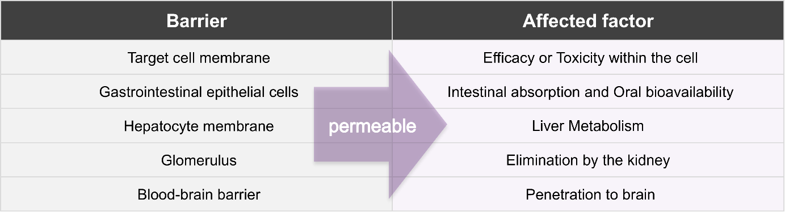
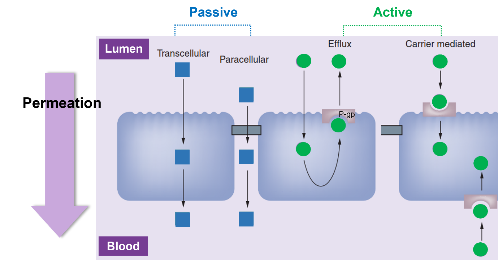
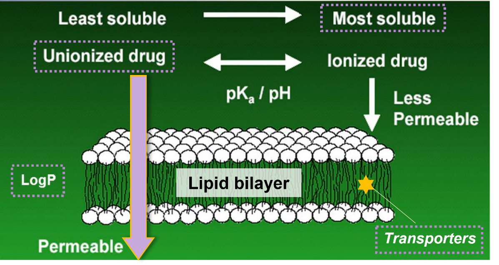
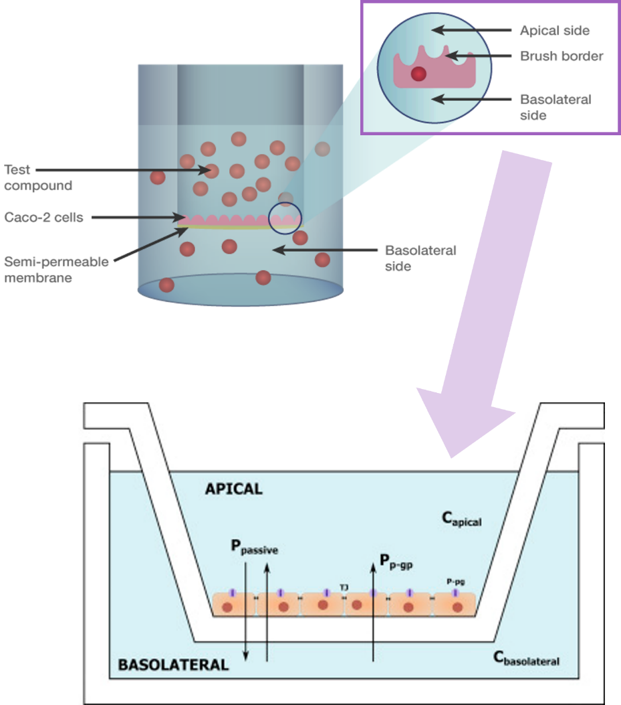
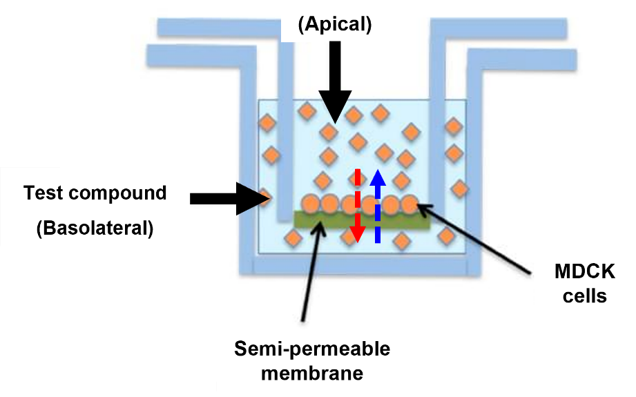
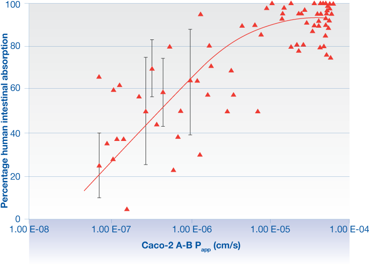

Chapter 2 Permeability
신초롱
2.1 서론
투과도 (Permeability)란 물질이 세포막을 통하여 수송되는 속도로서 정의된다. 경구 투여된 약물이 전신순환혈로 도달, 즉 흡수되기 위해서는 약물이 소화관 점막 상피세포막을 투과하는 과정을 반드시 거쳐야만 한다. 위, 소장, 간을 거쳐 전신으로 흡수된 약물은 타겟 조직으로 도달한 후 체외로 배설되기까지 여러 이행 과정을 거치게 되는데, 이 때도 여러 생체막의 관문을 통과하게 된다. 따라서 투과도는 흡수, 분포, 대사, 배설 과정 전반에 걸쳐 영향을 주는 인자로서 약동학의 가장 기초적인 자료라 할 수 있다 (그림 2.1).

그림 2.1. 생체막의 종류 및 관련 인자
이 장에서는 투과도의 개념과 막 투과 기전을 자세히 기술하고, 대표적인 투과도 평가 시험의 특성을 비교하여 실제 신약 개발 과정에서 목적에 맞는 시험을 설계하고 결과를 적절히 해석 및 활용할 수 있도록 돕고자 한다.
2.2 기본 개념
2.2.1 막 투과 기전
생체막은 단백질을 함유한 인지질 이중층 (phospholipid bilayer)으로 구성되어 있으며, 인지질 분자의 소수성 꼬리는 내측으로, 친수성 머리는 세포질 및 세포 외부로 향하도록 구성되어 있다 (그림 2.2).

그림 2.2. 생체막의 구조: 인지질 이중층
막 투과 기전을 이해하기 위하여 경구 투여된 약물이 장 상피세포를 투과하여 혈액으로 들어가는 과정을 생각해보자. 약물이 점막 상피세포의 brush border막을 통과하여 세포 내로 유입되고, 세포 내 확산 이동한 다음 측저막 (basolateral membrane)을 투과하여 모세혈관에 도달한다. 이러한 transcellular 수송은 막 내외의 농도 구배에 따른 수동수송 (passive transport) 뿐만 아니라 담체 (carrier), 펌프, 채널 등과 같은 막 단백질이 관여하여 농도 구배에 역행하는 능동수송 (active transport) 방식에 의해서도 이루어진다. 반면 세포 간극 (tight junction)을 통과하는 paracellular 수송은 수동수송 방식으로만 행하여진다 (그림 2.3). 수동수송과 능동수송의 차이는 생체 대사에너지에 대한 의존성으로, 후자는 수송 시 생체 대사에너지를 필요로 한다. 따라서 능동수송의 경우 대사 저해제 혹은 저온 환경에 의해 대사가 억제되면 투과도가 낮아질 수 있으며, 관여하는 막 단백질의 양에 한계가 있어 투과도의 포화 현상이 나타날 수 있다.

그림 2.3. 막 투과 기전
2.2.2 투과도에 영향을 주는 인자
앞서 살펴본 바와 같이 생체막은 인지질 이중층으로 구성되어 있어 약물의 지용성이 높을수록 세포막을 투과하기 쉽다. 그리고 해리형에 비해 비해리형은 지용성이 높으므로 더욱 잘 투과할 수 있으며, 따라서 약물의 pKa 및 막 내외의 pH 조건에 따라 투과도가 결정될 수 있다. 또한 soluble한 약물만이 투과할 수 있기에 약물의 용해도 역시 투과도에 영향을 주는 요인이다. 막 단백질과의 상호작용 또한 약물의 투과도를 결정하는 인자로, 가장 대표적인 예로서 uptake 혹은 efflux transporter의 발현 정도 및 그에 대한 약물의 친화도 (affinity)에 의해 약물의 투과도가 결정되기도 한다 (그림 2.4).
높은 투과도를 보이는 약물의 특성을 요약하면 다음과 같다.
High lipophilicity
Low ionizability
High solubility
High affinity to the uptake transporters
Low affinity to the efflux transporters

그림 2.4. 약물의 투과도에 영향을 주는 인자
2.3 투과도 평가 시험
2.3.1 PAMPA (Parallel Artificial Membrane Permeability Assay)
인공지질막을 이용한 시험법으로, 여러 막 투과 기전 중 수동수송에 대한 평가만이 가능하다는 특징이 있다. 주된 흡수 장기인 소장에서 약물은 주로 수동수송에 의해 장 상피세포를 투과하는 것으로 알려져 있으며, 이에 신약 개발 초기 단계에서 다수의 화합물에 대하여 빠르게 투과도를 평가하기 위하여 PAMPA 시험법이 널리 활용되고 있다.
PAMPA 시험은 그림 2.5와 같이 인공지질막이 있는 Kit를 사용하여 평가한다.
텍스트, 컴퓨터이(가) 표시된 사진 자동 생성된 설명
그림 2.5. PAMPA 시험의 모식도
먼저 DMSO 등의 유기용매에 약물을 완전히 용해시켜 stock solution을 만든다. 그리고 Donor plate의 well에는 약물을 평가하고자 하는 농도가 되도록 PBS buffer를 이용해 희석한 후 넣고, Acceptor plate의 well에는 PBS buffer를 넣어 25 ˚C에서 5시간 이상 배양한 후 Donor 및 Acceptor plate에서의 약물 농도를 LC-MS/MS와 같은 분석 기기로 측정하여 아래와 같은 식으로 Pe값을 산출한다.
\[P_{e} = C\ \times \left\lbrack - Ln\mspace{6mu}\left( 1 - \frac{\lbrack drug\rbrack_{acceptor}}{\lbrack drug\rbrack_{equilibrium}} \right) \right\rbrack\]
\[drug\]equilibrium = \[drug\]donor *VD + \[drug\]acceptor x VA / (VD + VA)
C = VD × VA / \[(V~D~ + V~A~) × t × A\]
VD = volume of donor compartment
VA = volume of acceptor compartment
A = filter area
t = incubation time (in seconds)
\[drug\]acceptor = Concentration of compound in the acceptor compartment at the assay completion
\[drug\]donor = Concentration of compound in the donor compartment at the assay completion
\[drug\]equilibrium = Concentration of compound at theoretical equilibrium
별도의 세포 배양 과정이 필요 없고, 약물의 농도를 UV plate reader를 활용하여 측정할 경우 대량의 화합물을 빠르게 평가할 수 있다는 것이 PAMPA의 가장 큰 장점이라 할 수 있다. 또한 세포주를 이용한 시험법 (cell-based assay)과 비교하였을 때 더욱 넓은 pH 범위에서 평가가 가능하므로, 보다 다양한 막 투과도 평가에 활용되고 있다. 그 예로 PAMPA-BBB를 활용하여 Brain-Blood Barrier에 대한 약물의 투과도를 평가할 수 있다. 그러나, 만약 UV plate reader를 활용하는 경우 약물의 평가 농도가 비교적 고농도에서 수행되어야 하는데, 이 때 용해도가 매우 낮은 약물인 경우 시험이 불가능할 수 있다. 그리고 수동수송 방식만이 구현되어 있어 실제로 약물이 막을 투과하는 기전을 완전히 재현하지는 못한 시험계로서 특히 transporter와 약물 간 상호작용을 평가할 수 없다는 단점이 있다.
2.3.2 Caco-2 cell-based permeability assay
사람 대장암 세포에서 유래한 Caco-2 세포주를 이용한 시험법으로, Caco-2 세포는 분화되면서 형태학적 및 기능학적으로 사람의 소장 상피세포와 유사한 특성 (예: microvilli을 가지며 tight junction을 형성)을 보이므로 경구용 약물의 투과도 평가 시 많이 활용되고 있다.
Caco-2 투과도 시험은 그림 2.6에 나타낸 바와 같이, well plate에 monolayer로 Caco-2 세포를 배양하고, Apical 및 Basolateral side에 각각 약물을 처리한 후 약물의 양방향성 수송능을 측정하기 위하여 Apical 및 Basolateral side 모두에서 약물 농도를 측정한다.

그림 2.6. Caco-2 cell-based permeability assay 방법
그리고 아래와 같은 식을 이용하여 세포막 투과 계수 (Papp, Apparent permeability coefficient) 및 Efflux ratio를 산출한다.
Papp= (dQ/dt) / (AⅹC0)
Efflux ratio = Papp (B to A)/ Papp (A to B)
여기서 dQ/dt는 초기 약물 수송 속도 (initial transport rate, μmol/s), A는 well의 표면적 (the surface area of the monolayer, cm2), C0는 처리한 약물의 농도 (initial concentration in the donor chamber, μmol/cm3)를 의미한다.
Caco-2 투과도 시험계에서는 약물의 수동수송 뿐만 아니라 능동수송 방식에 의한 막 투과도 행하여 지며, 내강막 (Apical membrane) 및 측저막 (Basolateral membrane) 간 양방향의 수송이 모두 일어난다. 또한 장에 많이 발현되어 있으며 약물의 흡수를 저해하는 P-glycoprotein (P-gp) 및 Breast cancer resistant protein (BCRP)와 같은 efflux transporter의 기질성 여부까지 판단할 수 있다 (기질인 경우 Efflux ratio > 2). 그러나 세포 배양 시 3주 이상이 소요되고, 시험 1주일 전 antibiotics-free media로 배양하는 과정 중 contamination의 가능성도 있으며 시험 수행에 숙련된 기술이 필요하기 때문에 수행자나 기관에 따라 그 값의 편차가 심하다는 단점이 있다. 또한 Caco-2 세포주가 사람의 대장세포라 실제 약물의 흡수가 많이 이루어지는 소장과는 다소 차이가 있을 수 있다.
2.3.3 MDCK cell-based permeability assay
개의 신장에서 유래한 MDCK (Madin-Darby Canine Kidney) 세포주를 이용한 시험법으로, 소장 상피세포의 tight junction과 유사한 구조의 cell monolayer에서 약물의 투과도를 평가한다. Caco-2와 마찬가지로 모든 투과 기전이 반영된 시험계로서, efflux transporter에 대한 기질성을 평가할 수 있다. 시험방법은 Caco-2 세포주를 이용하는 방법과 유사하지만, 일반적으로 3~4일을 배양하면 cell monolayer가 형성되므로 보다 신속히 평가를 진행할 수 있다. 다만 내재된 transporter의 발현 수준이 낮아 특정 transporter가 과발현 되도록 만들어진 형질전환 세포주 (transfected cell line)의 형태로 많이 사용된다. 따라서 약물의 세포막 투과도 평가 외에도 여러 transporter에 대한 기질성 및 저해능 평가 시험에도 많이 활용되고 있다 (예: MDCK II-MDR1 cell line).

그림 2.7. MDCK cell-based permeability assay
표 2.1. 투과도 평가 시험 방법 별 특성 비교
| PAMPA | Caco-2 cell-based | MDCK cell-based | |
|---|---|---|---|
| Cell origin | Artificial membrane | Human colorectal carcinoma cells | Madin-Darby canine kidney strain cells |
| Cell morphology | - | Intestinal epithelium | Distal tubule epithelium |
| Cell growing time | - | > 21 days | 3~4 days |
| Permeation mechanisms | Passive diffusion | Passive diffusion, Active transport, Paracellular and Efflux |
|
| Direction of transport | One-way (Donor → Acceptor) |
B i-directional (Apical ↔︎ Basolateral) |
|
| Expression of transporters | |||
| Uptake transporters | Not expressed | OATP1B1, OATP1B3, OATP2B1, PepT1, OCT1, OCT2 and OCT3 | OCT2, peptide and m onocarboxylic acids |
| Efflux transporters | Not expressed | P-gp (MDR1), MRP2, MRP4 and BCRP |
P-gp (MDR1), MRP1, MRP2 and MRP5 |
| Metabolism | No | Yes | Yes |
-: not applicable.
2.4 투과도 평가 결과의 해석 및 활용
앞서 설명한 in vitro 시험들을 통해 약물의 세포막 투과 계수를 산출할 수 있으며, 이를 토대로 그 약물의 소장에서의 흡수 정도를 예측하게 된다. 또한 in vitro 활성 시험에 있어서도 화합물이 세포 내 표적에 도달하여 약리 작용을 나타내기 위해서는 먼저 생체막을 투과해야 한다. 따라서 대다수의 제약사에서는 초기의 신약 탐색 단계 (drug discovery)부터 투과도 시험을 수행하여 후보물질을 선별하고 있다.
특히 Caco-2 세포주를 이용한 약물의 투과도는 사람의 소장 내 약물의 흡수율과 높은 상관성을 보이는 것으로 보고되어 있다 (그림 2.8). FDA의 ‘생물약제학적 분류체계 (Biopharmaceutics Classification System, BCS)’ 가이드라인6에 따르면, 약물의 용해도 및 장관 투과도에 근거하여 약물 성분을 분류하기 위해서는 약물의 세포막 투과 계수가 필요한데 이 때 사람에서 유래한 Caco-2 세포주를 이용한 약물의 투과도 평가 결과를 활용하도록 권고하고 있다. 또한 Caco-2 세포주를 이용한 약물의 투과도는 사람의 흡수속도상수 (absorption rate constant, ka)를 예측하는 데에도 활용될 수 있다.

그림 2.8. Caco-2 투과도와 사람 소장 흡수율 간의 상관 관계
PAMPA 시험의 경우 투과도 결과를 해석하기 위한 절대적인 기준은 없으며 시험기관 혹은 시험자마다 상이하다. 실무에서 흔히 사용되는 기준을 소개하면, PAMPA 시험 결과 투과 계수 (Pe)가 10*10-6 cm/sec 이상이면 투과도가 높은 약물로 분류하는 경우가 많다. 그러나 Pe 값이 10*10-6 cm/sec 이하인 경우라 할지라도 경구용 약물로 개발이 불가한 것은 아니며, 1*10-6 cm/sec 이상의 약물이면 경구용 약물로 개발 가능한 수준으로 판단하는 경우도 있다.
Caco-2 시험에서 산출된 Apical to Basolateral 방향의 겉보기 투과계수 (Papp, A to B)는 동일한 시험 배치에서 평가한 기준 약물 (reference drug)의 결과를 기반으로 시험 약물의 투과도가 높거나 중간 수준 혹은 낮다고 분류한다. 여기서 기준 약물이란 위에서 언급한 FDA의 가이드라인에 명시되어 있는 약물로서, 사람 소장에서의 흡수 분율 (fraction of human intestinal absorption; fa)에 따라 high (≥85%), moderate (50 - 84%), low (<50%) 및 zero-permeable 약물로 분류되어 있다. 보다 정확한 결과 해석을 위해서는 시험 약물과 더불어 high 및 low-permeable 기준 약물을 1종씩 선택하여 함께 평가를 수행하는 것이 바람직하다. 그리고 앞서 언급했지만, 세포주를 이용한 투과도 평가 시 efflux ratio가 2 이상이면 시험 약물이 해당 세포주에 발현된 efflux transporter의 기질성이 있다고 판단한다.
시험약물이 어떤 efflux transporter의 기질인지를 판단하려면, 평가하고자 하는 transporter의 알려진 기질 및 저해제를 처리하였을 때 시험 약물의 투과도 평가 결과가 어떻게 나타나는지를 확인하여야 한다. 다음 표 2.2의 예시와 같이, P-gp에 대한 기질성을 판단하기 위해서는 P-gp의 기질인 Talinolol과 저해제인 Verapamil 등을 이용하여 투과도 시험을 수행하여야 한다. 평가 결과를 보면 Test drug A는 알려진 P-gp의 기질인 Talinolol과 유사한 결과를 나타내었다. 즉 efflux ratio가 2 이상이면서 저해제인 Verapamil을 함께 처리 시 apical to basolateral 방향의 Papp 값이 2배 이상 증가한 것을 확인할 수 있다. 그 결과 저해제를 처리한 경우의 efflux ratio가 44.4로서 처리하지 않았을 때보다 2배 이상 감소하였다. 따라서 Test drug A는 P-gp의 기질인 것으로 판단된다. 반면 Test drug B는 efflux ratio가 모두 2 이하이고, 저해제 처리 유무에 따라 Papp 및 efflux ratio가 변하지 않고 일정한 값으로 산출되었다. 그러므로 Test drug B는 P-gp의 기질이 아니며, P-gp 외 Caco-2 세포주에 발현된 다른 efflux transporter의 기질도 아닌 것으로 해석된다.
표 2.2. Caco-2 세포주를 이용한 P-gp 기질성 평가 예시
| C ompound | Without Ve rapamil (P-gp inhib itor) | With Ve rapamil (P-gp inhib itor) | ||||
|---|---|---|---|---|---|---|
\[ x10^-6^ c m/sec\] |
\[ x10^-6^ c m/sec\] |
Efflux r atio |
\[ x10^-6^ c m/sec\] |
\[ x10^-6^ c m/sec\] |
Efflux r atio | |
Ta linolol (P-gp sub strate) |
0.292 | 11.5 | 39.3 | 1.07 | 1.34 | 1.25 |
| Test drug A | [0.397] {.under line} | 40.1 | [ 101]{. underl ine} | [0.959] {.under line} | 42.6 | [4 4.4]{. underl ine} |
| Test drug B | 12.6 | 22.5 | 1.78 | 11.8 | 24.3 | 2.05 |
Papp (A to B): permeability coefficient in apical to basolateral direction, Papp (B to A): permeability coefficient in basolateral to apical direction.
2.5 투과도 평가 시 고려사항
투과도 평가 시 회수율은 다음의 수식에 따라 산출되며, 그 개념을 설명하자면 최초 약물을 처리한 시점부터 배양액을 취하여 약물의 농도를 분석하기까지 잔존하는 약물의 양이라고 할 수 있다.
\[\mathbf{Recovery\ }\left( \mathbf{\%} \right) = \frac{total\ compound\ in\ both\ of\ A/B\ sides\ at\ the\ end\ of\ experiment\ (nmol)}{initial\ compound\ present\ (nmol)}\ \times \ 100\]
A: apical, B: basolateral.
만약 어떤 약물의 투과도를 평가하였을 때 배양액 내 약물의 농도가 낮아서 low-permeable한 약물로 분류되었으나 동시에 회수율이 매우 낮다면, 결과를 해석함에 있어 정말 약물의 투과도가 낮았던 것인지 혹은 다른 원인에 의해 약물이 소실되어 배양액 내 잔존하지 않았던 것인지를 구별하기 어렵다. 따라서 적어도 75% 이상의 회수율이 확인되어야 해당 시험계에서 산출된 투과도 값에 신뢰성이 있다고 판단할 수 있으며, 회수율이 낮은 경우 그 원인으로는 다음과 같은 사항이 포함된다.
Non-specific binding of test compound to plastic material
Poor solubility of test compound in the media
Instability of test compound in the media (i.e., due to the metabolism in cell)
Accumulation of test compound in the cell monolayer
이 중 배양액 내 약물이 실험 제품의 plastic ware에 비특이적 결합 (non-specific binding)을 하는 경우에는 배양액에 bovine serum을 첨가하여 약물이 plastic 대신 bovine serum과 결합하도록 한 다음 약물을 추출하거나 혹은 plastic material과 비특이적으로 결합한 약물을 유기용매로 wash out하여 추출하여 그 농도를 분석함으로써 낮은 회수율을 개선시키는 방법이 있다.
2.6 맺음말
이상으로 ADME의 기초자료: physicochemical properties에서 투과도에 대해 알아보았다. 투과도는 약물의 흡수와 관련된 주요 인자 중 하나이므로, 신약 개발 초기의 후보물질 탐색 시 물질 스크리닝을 위한 평가 항목으로 여겨진다. 그 외에도 사람에서의 약물 흡수를 예측하거나 efflux transporter와의 상호작용 연구 시 활용될 수 있다. 앞서 설명한 바와 같이 투과도를 평가하기 위한 in vitro 시험은 다양하므로, 각 시험의 특성을 이해하고 평가하고자 하는 목적, 개발 단계 등에 따라 적절한 시험을 선택하여야 하겠다. 뿐만 아니라 원하는 결과를 얻을 수 있도록 시험을 잘 설계하고, 데이터를 정확히 해석하는 것 역시 중요하다.
참고문헌
가톨릭대학교 계량약리학연구소. 신약개발을 위한 실전 약동학 I (2021).
약제학분과회. 생물약제학과 약물속도론: 약제학총서 3 (2005).
Di, Li, and Edward Kerns. Drug-like properties: concepts, structure design and methods from ADME to toxicity optimization. Academic press (2015).
Cyprotex Ltd. Everything you need to know about ADME, 3rd Edition (2017).
Volpe, Donna A. "Drug-permeability and transporter assays in Caco-2 and MDCK cell lines." Future medicinal chemistry 3.16 (2011): 2063-2077.
ICH Harmonised Guideline, M9 Biopharmaceutics Classification System-Based Biowaivers (2018).
Saxena, Amrita, et al. "Pharmacokinetics, dose proportionality and permeability of S002-333 and its enantiomers, a potent antithrombotic agent, in rabbits." Xenobiotica 45.11 (2015): 1016-1023.
Masungi, C., et al. "Parallel artificial membrane permeability assay (PAMPA) combined with a 10-day multiscreen Caco-2 cell culture as a tool for assessing new drug candidates." Die Pharmazie-An International Journal of Pharmaceutical Sciences 63.3 (2008): 194-199.